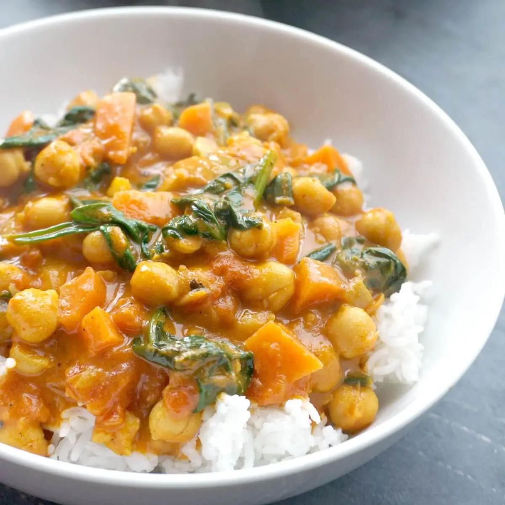

Coconut Curry Recipe

Overview
A rich curry sauce consisting of tomato paste and coconut milk, filled with chickpeas
and served over basmati rice.
Difficulty: easy
Time: 30 minutes
Vegetarian: yes
Ingredients
- Garlic 2 cloves
- Yellow Onion 1 medium
- Chickpeas 12 oz
- Basmati Rice 1 cup
- Tomato Paste 1.5 oz
- Smoked Paprika 1 tsp
- Yellow Curry 1 tbsp
- Coconut Milk 3/4 cup
- Sour Cream 1 oz
- Chili Pepper Personal Preference
- Butter 1 tbsp
- Oil 4 tbsp
- Granulated Sugar 1 tbsp
- Salt & Pepper to taste
Steps
- Peel then finely chop onion and garlic. Drain and rinse chickpeas. Roughly chop cilantro.
- Heat a drizzle of oil in medium saucepan over medium heat. Add half the garlic and saute until fragrant (approx. 30 seconds).
Stir in rice, 1 1/4 cup water, and a big pinch of salt. Bring to a boil then cover and simmer until rice is tender (approx. 15 minutes).
remove from heat but keep covered until ready to serve.
- While rice is cooking, heat a drizzle of oil in a large pan over medium heat. Add chopped onion and a pinch of salt, cooking until
lightly browned and softened (approx 8 minutes). Add paprika, curry, and remaining garlic. Saute until fragrant (approx. 30 seconds).
- Stir in chickpeas, coconut milk, tomato paste, sugar, a pinch of salt, & 1/2 cup water. Bring to a boil then simmer until thickened.
Add butter & sour cream. If too thick, add a splash of water.
- Fluff rice with a fork and top with a generous portion of sauce, then serve.